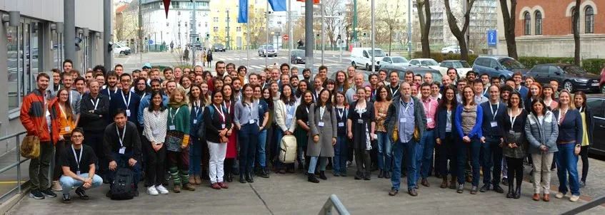
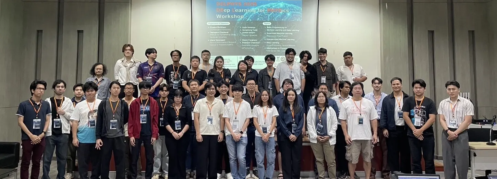
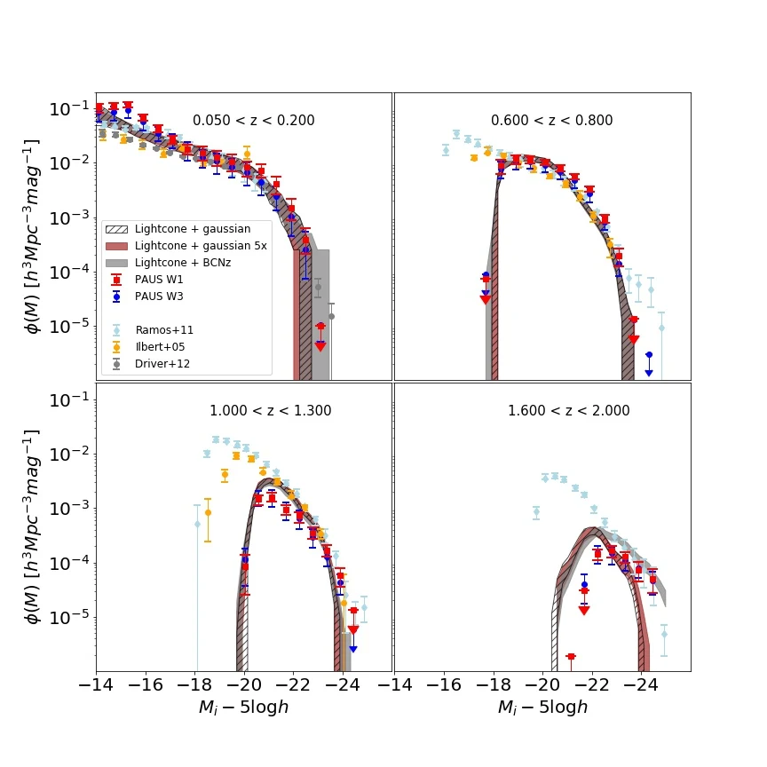
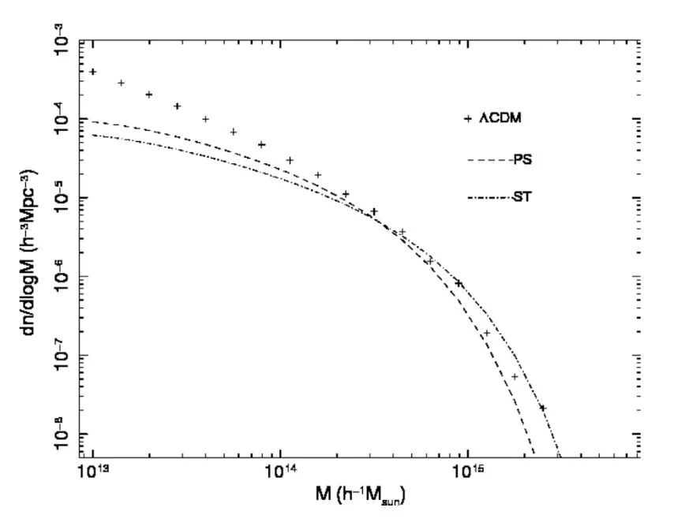
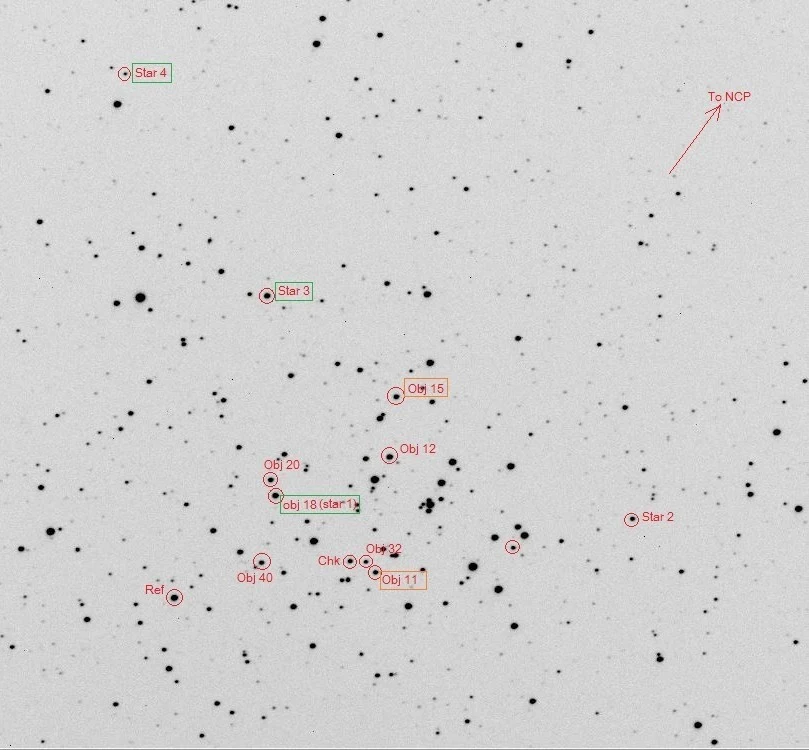

- Suttikoon Koonkor -
Welcome to my personal website, a space for a man wandering in the Universe with a great curiosity.
About Me

I am currently a Postdoctoral Researcher at the National Astronomical Research Institute of Thailand (NARIT). I received a PhD in Astrophysics (2021–2025) and an MSc in Physics by Research (2019–2020) from the Institute for Computational Cosmology, Durham University, UK, and a BSc in Physics from Khon Kaen University, Thailand.
Throughout my Masters and PhD, I was awarded a fully-funded scholarship from NARIT, under the Office of the Civil Service Commission of Thailand (OCSC) scholarship scheme. As an undergraduate, I received a scholarship under the Development and Promotion of Science and Technology Talents Project (DPST).
My research focuses on bridging the connection between the ‘light’ and the ‘darkness’ of our Universe. In particular, I study how stars and galaxies (the light) relate to dark matter (the darkness), by attempting to build a model Universe from scratch using our knowledge of gravity governed by dark matter and the physics of gas in stars and galaxies, with the help of high-performance computing facilities.
Apart from stars, galaxies and the Universe, I also enjoy playing football (a goalkeeper for Ustinov College Men's Football team), painting and drawing, photography, and lifting weights.

Research

The 𝑖-band galaxy luminosity function in the W1 and W3 fields of the PAU survey
We present a measurement of the i-band galaxy luminosity function from the present-day to z = 2, corresponding to three quarters of cosmic history, using over 1.1 million galaxies from the Physics of the Accelerating Universe Survey (PAUS). PAUS combines broad-band imaging from the Canada-France-Hawaii Telescope Lensing Survey with narrow-band photometry from PAUCam, enabling high-precision photometric redshifts with an accuracy of σ(Δz)/(1+z) = 0.019 down to i_AB < 23. A synthetic lightcone mock catalogue built using the GALFORM semi-analytic model is used to simulate PAUS selection effects and photometric uncertainties, and to derive a machine-learning based estimate of the k-correction. We recover rest-frame i-band luminosities using a random forest regressor trained on simulated ugriz photometry and redshifts. Luminosity functions are estimated using the Vmax method, accounting for photometric redshift and magnitude errors, and validated against mock data. We find good agreement between observations and models at z < 1, with increasing discrepancies at higher redshifts due to photometric redshift outliers. Faint-end of the luminosity function becomes more incomplete with increasing redshift, but is still useful for constraining models. We analyze the red and blue galaxy population separately, observing distinct evolutionary trends. The model overpredicts the number of both faint red and blue galaxies. Our study highlights the importance of accurate redshift estimation and selection modeling for robust luminosity function recovery, and demonstrates that PAUS can characterise the galaxy population with photometric redshifts across a wide redshift baseline.
Application of Principal Component Analysis to Galaxy Spectral Energy Distributions
In this work, we aim to reduce the computational expense when calculating galaxy spectra by applying PCA to the SEDs of simple stellar populations (SSPs). We consider different star formation histories and different metallicities. As a result, we find that the dimensionality of the SSP spectra can be reduced by a factor of ~50 whilst there is only a small loss in accuracy (~1 - 5%) of the reconstructed spectra. Moreover, we find that this loss in accuracy is negligible when computing broadband magnitudes (<<1%). Our results suggest that this calculation method may be a plausible way to predict spectra for all the galaxies in the output of a semi-analytical model covering a cosmological volume (e.g. GALFORM; Cole et al. 2000).

Halo Mass Function in Dark Energy Models
This study explores halo mass functions using cosmological simulations from the Dark Energy Universe Simulation (DEUS) and compares it with theoretical predictions, spherical collapse model by Press-Schechter and ellipsoidal collapse model by Sheth-Tormen. We use the dark-matter only Universe simulations of a box of 648 h−1Mpc a side with cosmological constant dark energy (ΛCDM) and the Ratra-Peebles scalar field dark energy (RP). In each model, we consider structures formed at redshift z = 0.00, 0.10, 0.40, 0.65, and 1.00, and structures mass range from 10^13 - 10^16 h^−1M solar masses. In the results, we find that the halo mass function at higher redshift is lower than that at the lower redshift, even more so for massive systems. This is in accord with hierarchical structure formation scenario. Moreover, the comparisons of RP to ΛCDM halo mass functions in the same redshift show that the halo mass function of RP is always less than that of ΛCDM because the matter density parameter used in the simulation of RP is lower than that of ΛCDM. Finally, the analogies between the halo mass functions from the simulation and from the theoretical predictions present that the Press-Schechter mass function agrees with the simulation results more than the Sheth-Tormen mass function, except at high redshift in RP dark energy model.

A Search for New Short-Period Variable Stars in the NGC2360
This project presents a search for new variable stars towards in the open cluster; NGC 2360 using the photometry technique. MaxIm DL software was used to calibrate the images. The raw images were taken by Dr. David Mkrtichian who is currently working as NARIT science member. We used the 0.5m diameter of the telescope at Thai National Observatory (TNO) in Chiang Mai. Those images were taken on December 24, 25 and 27, 2014. The calibrated images were analyzed for searching the newest variable stars which are unidentified in the international database such as SIMBAD, VizieR, etc. We used SigmaPlot software to analyze the period of the variable stars using time-series wave function and taken color index data from SIMBAD database to estimate their spectral types. We found 4 stars tend to be the variable stars. The period of No.1-3 variable stars are 3.24, 4.50 and 3.84 hours, respectively. Those three stars have roughly spectral type F. The latest variable star has period 1.69 hours. This star is not identified in the database yet therefore it could be the newest variable star as detected using TNO.
Outreach
I still remember seeing stars through a telescope during a summer camp when I was in primary school, nine years old at the time. It was my first experience of observing the Universe in a way I had never seen before. It brought me joy, not only because it was something new, but because it sparked a sense of curiosity that stayed with me. That feeling faded for a while — I was a child who enjoyed playing with friends, as we are supposed to do — but it returned later, when I had to decide what I wanted to pursue as a career. I made that decision in secondary school, and I still can't quite believe it is the choice I've held to since so young an age. From that point on, I knew I wanted to become an astronomer.
Looking back, I strongly believe that without that summer camp and the opportunity to look through a telescope, I might not be doing what I do today — something I truly enjoy. That experience shaped my belief that giving people, especially younger generations, opportunities to try new things allows them to discover their interests and potential. For this reason, I take part in outreach whenever possible, and I am always among the first to volunteer when the chance comes.
Throughout my degrees, I have served as a demonstrator at several astronomy camps, some of them in remote mountain locations. There is nothing more rewarding than being asked a question that reflects genuine curiosity. These questions, particularly from very young students, challenge me to rethink concepts and to make sure I truly understand what I am explaining.
An opportunity is what I value the most. What people do with it, once given, is up to them.
Material
Notes, references and plots that I think are worth sharing.
- Galaxy Survey Timeline A visual history of the redshift surveys that mapped the Universe, from CfA to LSST and Roman.
- Git Cheat Sheet The Git workflow I use day to day, written up for anyone starting out with version control.
Brief CV
National Astronomical Research Institute of Thailand (NARIT)
National Astronomical Research Institute of Thailand (NARIT)
Durham University, UK
Thesis: "A New Estimate of the Galaxy Luminosity Function, using Machine Learning and a Mock Catalogue"
Durham University, UK
Thesis: "Application of Principal Component Analysis to Galaxy Spectral Energy Distributions"
Khon Kaen University, Thailand
Thesis: "Halo Mass Function in Dark Energy Models"
Undergraduate Teaching Assistant, Durham University, UK
Graded assignments
Undergraduate Teaching Assistant, Durham University, UK
Guided weekly assignments and graded assignments
Postgraduate Teaching Assistant, Durham University, UK
Guided weekly assignment and graded assignments
Awarded a postgraduate ambassador award for my contribution to physics outreach.
Awarded full financial support for postgraduate study from the Office of the Civil Service Commission of Thailand (OCSC).
Awarded a fully-funded scholarship for bachelor's degree in science from the Development and Promotion of Science and Technology Talents Project.
Awarded a Best Oral Presentation for the research project presentation.
Recieved an excellent science ambassador award as a part of a two-person team.